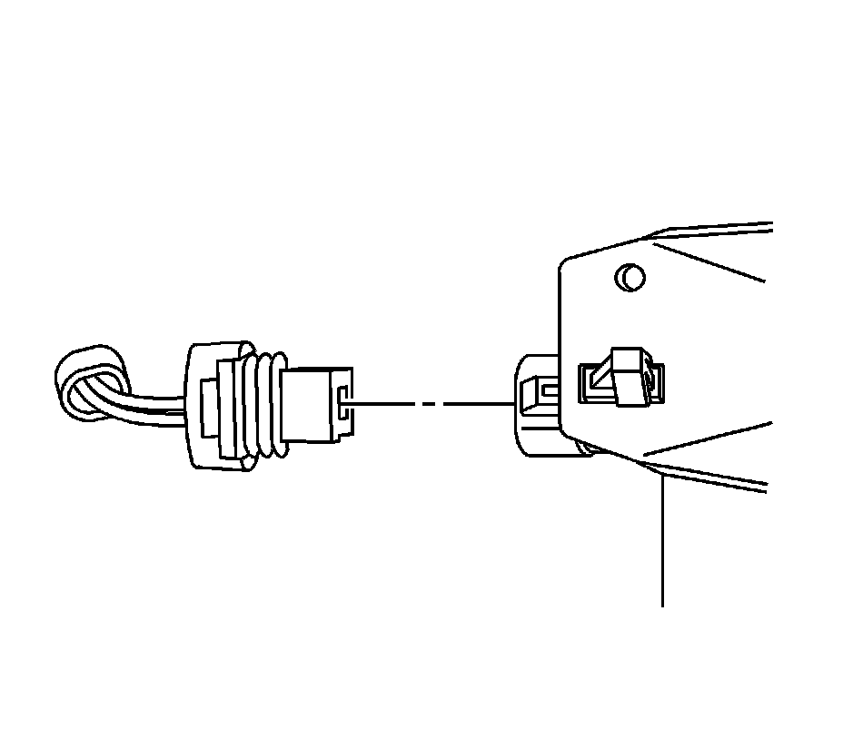
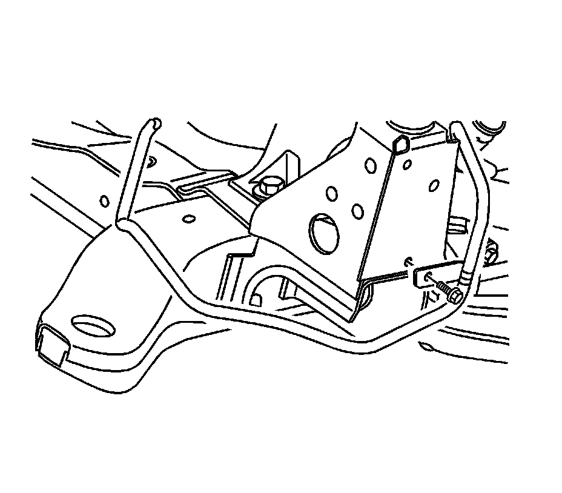
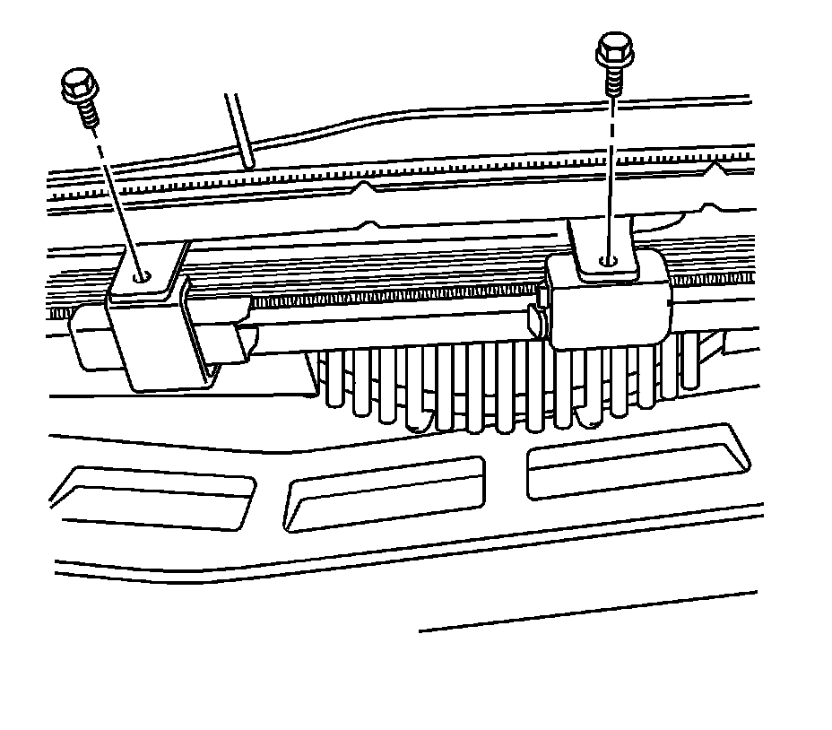
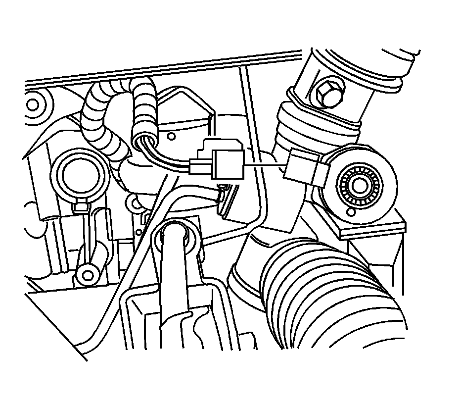
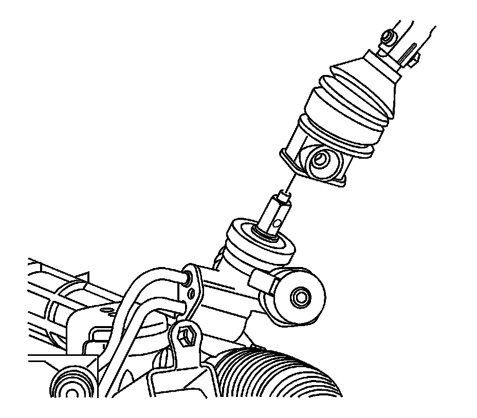
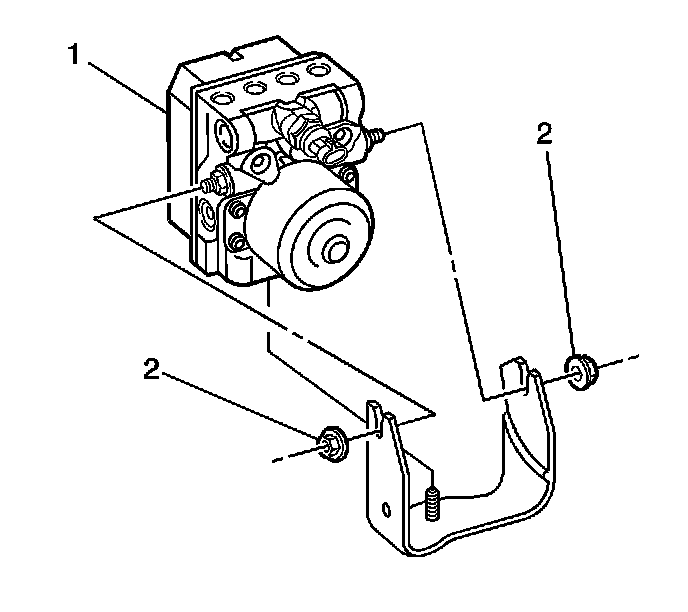
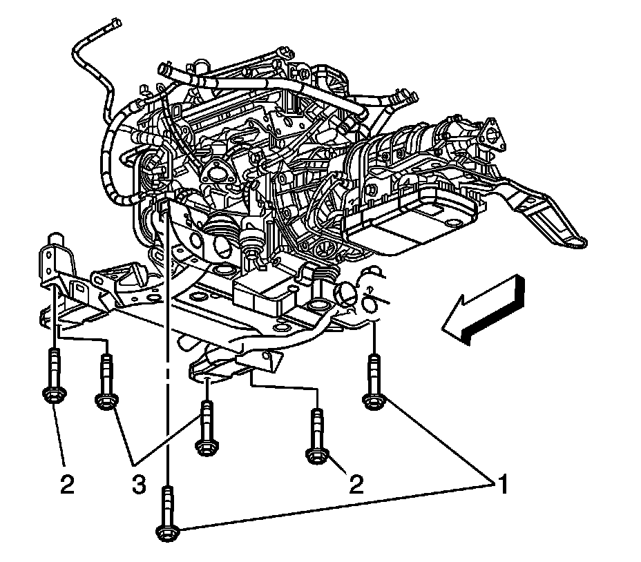

Front Frame Replacement
Front Frame Replacement
Tools Required
* J 24319-B Steering Linkage and Tie Rod Puller
* J 39580 Engine Support Stand
* J 43631 Ball Joint Remover
Removal Procedure
1. Install the engine support fixture. Refer to Engine Support Fixture (Engine Support Fixture) for the 3.6L (LY7 - Gas, 6 Cylinder, 3.6L, SFI, V6) engine or Engine Support Fixture (Engine Support Fixture) for the 4.6L (LH2 - Gas, 8 Cylinder, 4.6L, SFI, V8, DOHC, HO) engine.
2. Raise and support the vehicle. Refer to Lifting and Jacking the Vehicle (Service and Repair) .
3. Remove the front wheels. Refer to Tire and Wheel Removal and Installation (Service and Repair) .
4. Remove the front air deflector. Refer to Front Air Deflector Replacement (Service and Repair) .

5. Disconnect the wheel speed sensor harness connectors.
6. Disconnect the wheel speed sensor harness from the lower control arm.

7. Remove the outer tie rod to steering knuckle retaining nut.

8. Using the J 43631 , separate the outer tie rod from the steering knuckle.

9. Remove the power steering return hose to frame retaining bolts.

10. Remove the power steering pressure hose to frame retaining bolts.
11. Remove the engine control module (ECM). Refer to Engine Control Module Replacement (Service and Repair) for the 3.6L (LY7 - Gas, 6 Cylinder, 3.6L, SFI, V6) engine or Engine Control Module Replacement (Service and Repair) for the 4.6L (LH2 - Gas, 8 Cylinder, 4.6L, SFI, V8, DOHC, HO) engine.
12. Remove the ECM bracket retaining bolts.
13. Remove the ECM bracket.

14. Remove the power steering cooler bracket to air conditioning condenser retaining bolts.
15. Remove the power steering cooler from the air conditioning condenser.
16. Remove the tie strap from the power steering pressure hose to the electrical harness.

17. Remove the power steering pipes to steering gear retaining bolt.
18. Disconnect the power steering pipes from the power steering gear.

19. Disconnect the variable effort steering electrical connector from the power steering gear.

20. Remove the intermediate shaft to power steering gear pinch bolt.

21. Disconnect the intermediate shaft from the power steering gear.

22. Disconnect the brake lines (1) from the brake hoses (3).

23. Loosen the ABS module retaining nuts (2, 3).
24. Disconnect the ABS module harness connector.
25. Remove the upper ball joint retaining nut.
Notice: Do not free the ball stud by using a pickle fork or a wedge-type tool. Damage to the seal or bushing may result.
26. Using the J 43631 , separate the ball stud from the steering knuckle.
27. Remove the yoke to shock retaining nut.
28. Remove the yoke to shock retaining bolt.
29. Remove the washer bottle to knuckle retaining bolts.

30. Remove the engine mount lower retaining nuts.
31. Install the J 39580 under the vehicle.
32. Lower the vehicle to the frame support table.

33. Remove the frame mounting bolts (1-3).
34. With the aid of an assistant, carefully raise the body from the frame.
35. Ensure when raising the body the following items are clear from the frame:
* The brake pipes
* The steering knuckle assembly
* The wheel speed sensor electrical harness
36. Remove the lower control arms. Refer to Lower Control Arm Replacement (Front Suspension) .
37. Remove the stabilizer shaft. Refer to Stabilizer Shaft Replacement (Front Suspension) .
38. With the aid of an assistant, remove the frame from the support fixture.
Installation Procedure
1. With the aid of an assistant, install the frame to the support fixture.
2. Install the stabilizer shaft. Refer to Stabilizer Shaft Replacement (Front Suspension) .
3. Install the lower control arms. Refer to Lower Control Arm Replacement (Front Suspension) .
4. Ensure when lowering the body the following items are clear from the frame:
* The brake pipes
* The steering knuckle assembly
* The wheel speed sensor electrical harness
5. With the aid of an assistant, carefully lower the body to the frame.
Notice: Refer to Fastener Notice (Fastener Notice) .
6. Install the frame mounting bolts (1-2).
Tighten the bolts to 191 N.m (141 lb ft).
7. Install the frame mounting bolts (3).
Tighten the bolts to 250 N.m (185 lb ft).
8. Raise the vehicle from the support table.
9. Install the engine mount lower retaining nuts.
Tighten the nuts to 80 N.m (59 lb ft).
10. Install the washer bottle to knuckle retaining bolts.
Tighten the bolts to 6 N.m (53 lb ft).
11. Install the yoke to shock retaining bolt.
Tighten the bolt to 180 N.m (133 lb ft).
12. Install the yoke to shock retaining nut.
Tighten the nut to 180 N.m (133 lb ft).
13. Install the upper ball joint retaining nut.
Tighten the nut to 20 N.m (15 lb ft plus 210 degrees).
14. Tighten the ABS module retaining nuts (2, 3).
Tighten the nuts to 8 N.m (71 lb in).
15. Connect the ABS module harness connector.
16. Connect the brake lines (1) to the brake hoses (3).
Tighten the fittings to 27 N.m (20 lb ft).
17. Connect the intermediate shaft to the power steering gear.
18. Install the intermediate shaft to power steering gear retaining bolt.
Tighten the bolt to 50 N.m (37 lb ft).
19. Connect the variable effort steering harness connector to the power steering gear.
20. Install the power steering pipes to the power steering gear.
21. Install the power steering pipes to steering gear retaining bolt.
Tighten the bolt to 23 N.m (17 lb ft).
22. Install a new tie strap to the power steering pressure hose and the electrical harness.
23. Install the power steering cooler to the air conditioning condenser.
24. Install the power steering cooler bracket to air conditioning condenser retaining bolts.
Tighten the bolts to 9 N.m (80 lb in).
25. Install the ECM bracket.
26. Install the ECM bracket retaining bolts.
Tighten the bolts to 9 N.m (80 lb in).
27. Install the ECM. Refer to Engine Control Module Replacement (Service and Repair) for the 3.6L (LY7 - Gas, 6 Cylinder, 3.6L, SFI, V6) engine or Engine Control Module Replacement (Service and Repair) for the 4.6L (LH2 - Gas, 8 Cylinder, 4.6L, SFI, V8, DOHC, HO) engine.
28. Install the power steering pressure hose to frame retaining bolts.
Tighten the bolts to 4 N.m (35 lb in).
29. Install the power steering return hose to frame retaining bolts.
Tighten the bolts to 4 N.m (35 lb in).
30. Install the outer tie rod to steering knuckle.
31. Install the outer tie rod to steering knuckle retaining nut.
Tighten the nut to 70 N.m (52 lb ft).
32. Connect the wheel speed sensor harness to the lower control arm.
33. Connect the wheel speed sensor harness connector.
34. Install the front air deflector. Refer to Front Air Deflector Replacement (Service and Repair) .
35. Install the front wheels. Refer to Tire and Wheel Removal and Installation (Service and Repair) .
36. Lower the vehicle. Refer to Lifting and Jacking the Vehicle (Service and Repair) .
37. Remove the engine support fixture. Refer to Engine Support Fixture (Engine Support Fixture) for the 3.6L (LY7 - Gas, 6 Cylinder, 3.6L, SFI, V6) engine or Engine Support Fixture (Engine Support Fixture) for the 4.6L (LH2 - Gas, 8 Cylinder, 4.6L, SFI, V8, DOHC, HO) engine.